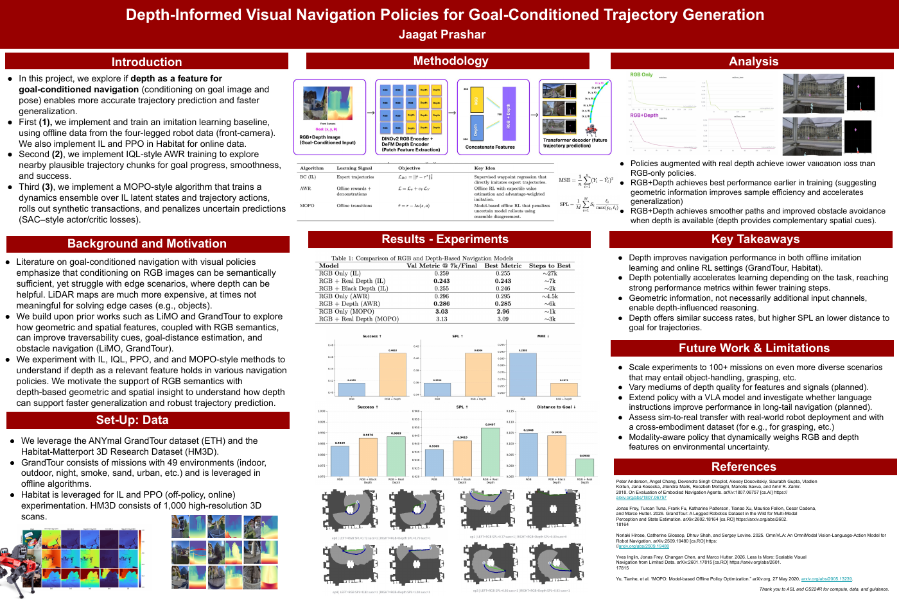

A closer look at the researchDepth-informed
visual navigation
Goal-conditioned trajectory generation
How much does depth help a robot find its way? I compared RGB, estimated depth, and fused observations across imitation learning, offline RL, PPO, and model-based policies on GrandTour and Habitat.
6.2% lower validation loss with RGB + depth versus RGB alone in the imitation-learning experiment.